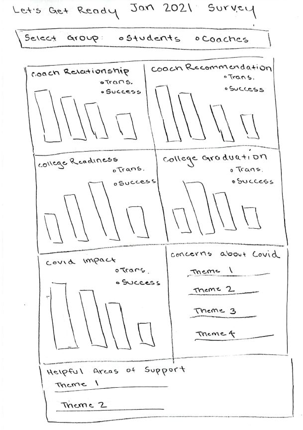

Assignment 6: Portfolio Piece
Full Notebook HERE
The Let's Get Ready dataset is contained within an Excel workbook and consists of four sheets: Transition Students, Success Students, Transition Coaches and Success Coaches. The definitions of Transition and Success groups are provided below.
Data Cleaning
The data was first cleaned and grouped such that two objects were created, students and coaches. A "group" column was created to delineate between transition and success groups. The table below outlines the number of Transition and Success students and coaches.
| Group | Total |
|---|---|
| Transition Students | 421 |
| Success Students | 630 |
| Transition Coaches | 32 |
| Success Coaches | 71 |
The cleaned Students Object is shown below. Searching for "transition" returns a total of 421 results, which agrees with the table above.
Exploratory Data Analysis
Basic EDA was performed to gain an understanding of the data.
First, student ratings of their relationship with their coach was plotted. The question was phrased as "I have a positive relationship with my coach." Almost all students in both groups, Transition (green) and Success (orange), agreed with this statement.
Next, students were asked to rate "I would recommend my coach to other Let's Get Ready students." Again, almost all students in both groups agreed with this statement. Transition students are plotted in green and Success students are shown in orange.
Finally, the impact of coronavirus was inspected for Students (left, Transition: green, Success: orange) and Coaches (right, Transition: green, Success: orange). Students were asked "To what extent has the coronavirus negatively impacted your college plans?" while coaches were asked "To what extent has the coronavirus negatively impacted the students you serve?". Interestingly, student ratings were centered around "A moderate amount" while coach ratings were centered around "A lot". This means coaches were perceiving a larger negative impact of coronavirus to their students than students themselves were perceiving. Note the y-axis scales for both plots.
Proposal
Create a data dashboard with radio buttons to toggle between students and coaches, transition and success groups. Data will mostly be displayed as bar charts. We can also extract themes from free text data (TF-IDF). Themes can be displayed in written format, word cloud or text graph. An example is provided below.
Stakeholder Feedback (10/28)